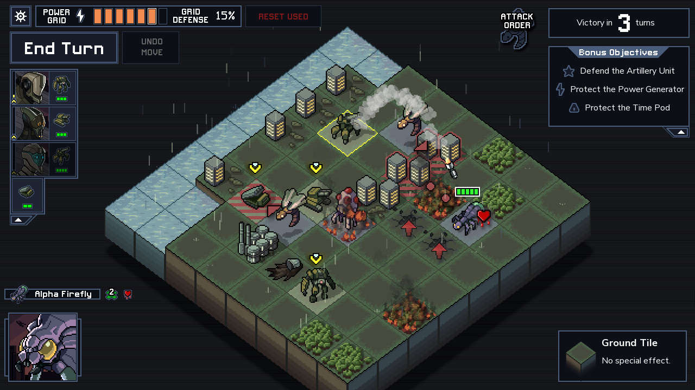
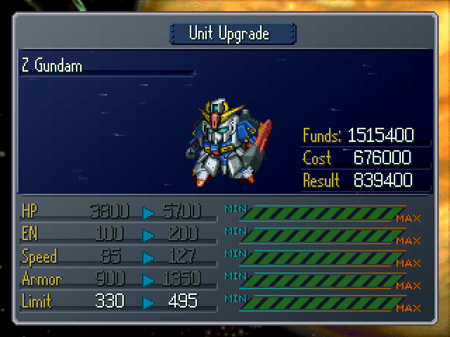
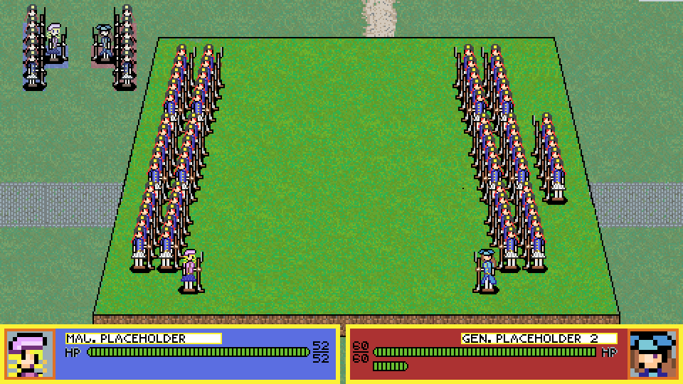

Aims:
Unfortunately, with the current abilities of each member, we are not capable of finishing such a product. As a result, our aim is to create, primarily, a functional Fire Emblem clone, and then add the twist in. Additionally, if possible, we want to use it as a workable playground to test and further improve our own ideas and concepts.Firstly, to achieve such an aim, our goal is to successfully understand how Unreal Engine works and the engine capabilities. Due to the main programming language used in Unreal Engine being C++, it is necessary that at least a few of us have experience with it in general, not just game design specifically. The reason being that you should always know your tools well before the process of making the game. Because we have a small number of people as well as limited abilities in game design. Additionally, it is wise that you use a fair amount of people and split them into different areas instead of forcing everyone to do one thing, which could slow down progress.
Secondly, it is important that we always do research on whatever we are working on regardless of how knowledgeable we are. Hence, I think one of our goals is to break down the Strategic RPG genre, and the Fire-Emblem-like game, respectively. Although this sounds like slacking off than work, but playing a lot more games like Fire Emblem, or Fire Emblem themselves also helps quite a lot. And instead of just playing the game, we should absorb all the details that the developers put in the games. Things like taking notes, constant replaying, watching, or reading deep analysis on the games are encouraged. This goal is incredibly important because, as I previously mentioned, only two members of our group know what FE is about.
Finally, game design is a constant loop of testing and improving. A lot of times, people underestimate the importance of the testing process and the testing audiences. You can test your own games but having different perspectives from many people is better. To successfully launch a game, you should, if not must, release alpha, or beta, versions of the game for people to test. The goal here, however, is to secure the right testers for our projects. This group of players should have a variety ranging from starters to veterans of the Strategic RPG genre. The more people the better, but we will also have to keep the type in mind when looking for testers.
Plans and Progress
Plan
The project can be divided and worked on in three phases: The first phase focuses on working on the game as a tech demo to familiarize ourselves and our tools. In this case this will be the team first foray into using and customizing Unreal Engine and C++. In this phase the end goal is to create a prototype that contains all features of the game using placeholder assets to minimize cost and development time. Among the attributes of Unreal Engine, we must first focus on its render capability which while optimized for 3D graphics is also capable of dealing with 2D graphic albeit in and suboptimal way which we will have to deal with. When the team is sufficiently familiar with Unreal, we will begin building our game. The second phase will be to turn the prototype into a full game. Here we will focus on the design of the game, how it will be structured, map design, the narrative, etc.... The third phase which is done side by side with the second phase will be the marketing and PR works needed to sell or at least distribute the game. Should the team fail to meet its goal in the first two phases the project can be scrapped with minimal issue. Here we will explain the various aspects of the game and how they will be created.a) Tactic Map structure:

Figure 1. An example of a tactic map (Into the Breach by Subset game
The gameplay take place on a grided map with define border and size. The game piece will move through the map like chess piece with defined movement direction and distance. Each square in the grid represents a piece of terrain and will modify the stats of the unit moving through them. In our game, this could mean a terrain like
b) Units:

Figure 2. An example of a unit and its stats (Super Robot War Alpha by Banpresto.)
Units are the main interactive elements of the games; they are the chess pieces which both the player and the computer will use to play on the above map. A limited number of unique units will be given to the player while more numerous generic units populate the maps which are given to the AI of that map. The game is balanced in such a way that the player units will be less numerous but have better stats while the enemy will have quantity advantage. However, the team will have to balance the two sides so that the enemy can still pose a challenge to the player. In the prototype stage, we would focus on the implementation and playtesting of the mechanic first. This is to see if the mechanic would work and whether they are fun. Once we begin phase two, we could focus on creating the actual units that the player would interact with. This is also when we would begin the balancing of units. In phase 2, the team will begin commissioning artists to create the unique art assets for these units. The units and the characters they represent will also be a center point of the marketing campaign for the games.
Progress
Figure 3. A mock-up of what the game could look like
If the team has been working on this for 4 weeks, the state of the project would be like so. At this point of time, the team would have several weeks to familiarize ourselves with Unreal Engine and especially its drag and drop “Blueprint” system which help minimized coding work. We each would have created micro-games using Epics Games Unreal Engine learning courses. The progress between each member will differ between those familiar with game design as a skill and those who lean more closely towards pure coding skill. Those who fell to the latter group would be given jobs to help optimize the work of the former as the designer will begin working on how to implement the prototype. As the team consist of those with limited experience as software developers, we will rely heavily on Unreal Engine Blueprint system to create and test our design ideas with limited amount of coding, mostly relying various code repository and forums for solution which we could not figure out on our own. As C++ is one of the more difficult language to learn and use, we will have a challenging time modifying and optimizing the code we found and will treat it as a kind of module to copy, paste or delete. However, the biggest issue will come from the camera systems and the complexity of relative positioning of object. Due to the nature of video game rendering and object positioning, the relative position and even size of object changes widely depending on which object it is attached to as well as the coordinate sets it is assigned to. This is especially complicated in 3D games where while the object and environment are technically three dimensional but because the game is rendered on a flat screen leading to potentially buggy translation of 3D into 2D. Even in 2D games, the fact that the player “camera” cannot view the whole scene at the same time can cause issue where the relative coordinate of object in the set and the object on-screen might mismatch. On the other hand, most of the systems in the game are in form of various math equations mean the team will have a good opportunity to learn and implement the basics of C++. At the end of the four weeks, the team would have created a first buggy prototype that could perform the most basic of feature of the full games. If the team continues with the project from here, we will begin debugging while also adding more features to learn and test. Features that are deem too complicated for either the dev team or the player will be cut here before phase 2.